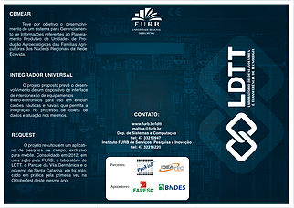
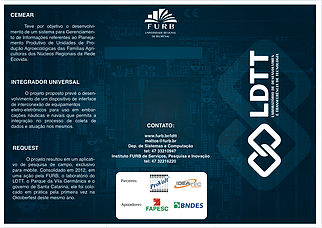

Laboratório de Desenvolvimento e Transferência de Tecnologia
O Laboratório de Desenvolvimento e Transferência de Tecnologia do Departamento de Sistemas e Computação da FURB foi criado em 2008 sob coordenação do prof. Dr. Mauro Mattos.

O Laboratório de Desenvolvimento e Transferência de Tecnologia do Departamento de Sistemas e Computação da FURB foi criado em 2008 sob coordenação do prof. Dr. Mauro Mattos.


Promover e facilitar a produção, difusão e transferência de tecnologias de informação e comunicação, através da pesquisa científica, inovação tecnológica e geração de conhecimento para a sociedade, contribuindo para a aproximação entre a Universidade e as empresas.